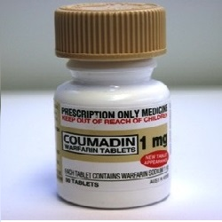

Coumadin (Warfarin)

Warfarinလို့လူသိများပြီး သွေးကျဲဆေး၊သွေးခဲမစုအောင် တားဆီးပေးတဲ့ဆေးဖြစ်ပါတယ်။သွေးခဲစေသော protein ထုတ်လုပ်မှူနည်းအောင်လျှော့ပေးပြီး ခန္ဓာကိုယ်သွေးလည်ပတ်မှူကောင်းစေပါတယ်။
ဆေးကိုဘယ်နေရာတွေမှာသုံးလဲ?
- ဦးနှောက်၊နှလုံး၊အဆုတ် အစရှိတဲ့နေရာတွေမှာသွေးခဲဖြစ်နှူန်းလျှော့ချပေးလို့ လေဖြတ်ရောဂါ၊နှလုံးရောဂါဖြစ်ပွားနှူန်းကိုနည်းစေပါတယ်။သွေးခဲဖြစ်စေနိုင်တဲ့အကြောင်းအရာတွေဖြစ်တဲ့-နှလုံးခုန်ပုံမှန်မဟုတ်သောသူ၊နှလုံးအဆို့ရှင်လဲထားသောသူ၊နှလုံးရောဂါဖြစ်ဖူးသူ၊ဒူးခေါင်းရိုးခွဲစိတ်အစားထိုးထားသောသူတွေမှာ အဓိကသုံးပါတယ်။
ဆေးရဲ့ဆိုးကျိုးဘာတွေရှိလဲ?
- ပျို့အန်၊အစားအသောက်ပျက်၊ဗိုက်အောင့်ဗိုက်နာများဖြစ်တတ်ပါတယ်။သွေးကျဲစေသောအာနိသင်ရှိလို့ ခန္ဓာကိုယ်မှသွေးထွက်နိုင်တဲ့လက္ခဏာများ(သူ့အလိုလိုသွေးခြေဥခြင်း၊သွေးမတိတ်ခြင်း၊နှာခေါင်းသွေးလျှံ၊သွားဖုံးသွေးယိုခြင်း၊ဆီးအရောင်ရင့်ခြင်း၊ဝမ်းမဲမဲသွားခြင်း၊အညိုရောင်အန်ခြင်း၊ခေါင်းကိုက်၊ခေါင်းမူးခြင်း)ဖြစ်တတ်ပါတယ်။လက္ခဏာဆိုးလျှင်နီးစပ်ရာဆေးခန်းသွားပြပါ။ဆေးရပ်ပြီးလျှင်တောင် သွေးကျဲစေသောအာနိသင်က သွေးထဲမှာ ၁ပတ်ခန့်ကျန်နေတတ်ပါတယ်။ကျောက်ကပ်၊မျက်လုံးထိနိုင်ပေမယ့် ရှားပါတယ်။
ဆေးသောက်လျှင်ဘာတွေသတိထားရမလဲ?
- အခြားသောက်နေသောဆေးများ၊ရောဂါအခံ၊ကျောက်ကပ်ရောဂါ၊အသည်းရောဂါ၊သွေးထွက်တတ်သောရောဂါ၊မကြာခင်က အကြီးစားခွဲစိတ်မှူလုပ်ထားတာရှိ/မရှိ ဆရာဝန်ကိုကြိုပြောထားဖို့လိုပါတယ်။အရက်သောက်တတ်သောသူများတွင် အစာအိမ်ပိုထိနိုင်သောကြောင့် အရက်သောက်တာကိုလျှော့ရပါမယ်။Vit Kပါဝင်မှူများသောအစားအစာများ(ပန်းဂေါ်ဖီ၊ဂေါ်ဖီစိမ်း၊ဂေါ်ဖီထုပ်၊ကညွှတ်)နှင့် Vit K ပါဝင်သောအားဆေးကိုရုတ်တရက်များတာ၊နည်းတာရှောင်ရပါမယ်။။သွေးကျဲစေသော၊သွေးတိတ်ရခက်သောအာနိသင်ရှိလို့ ဆေးသောက်နေစဉ် ခန္ဓာကိုယ်ထိခိုက်မှူနည်းအောင် သတိထားရပါမယ်။ခွဲစိတ်မှူတစ်ခုခုပြုလုပ်ဖို့ရှိလျှင် ဆရာဝန်၊သွားဆရာဝန်တွေကို သွေးကျဲဆေးသောက်နေတာ ကြိုပြောထားဖို့မမေ့ပါနဲ့။ကိုယ်ဝန်ဆောင်များလည်း warfarin လုံးဝမသုံးသင့်ပါ။ဆရာဝန်နဲ့သေချာတျုင်ပင်ပြီးဆေးပြောင်းဖို့လိုလျှင်ပြောင်းရပါလိမ့်မယ်။နို့တိုက်မိခင်များတွင်တော့ အန္တရာယ်မရှိပါ။
ဆေးအာနိသင်ဘယ်လိုရှိလဲ?
– အကိုက်အခဲပျောက်ဆေး၊အခြားသွေးကျဲဆေးများ(aspirin,clopidogrel) များနှင့်တွဲသုံးလျှင်ဆိုးကျိုးရှိနိုင်လို့ ဆေးပမာဏနည်းအောင်ပြောင်းရပါမယ်။တိုင်းရင်းဆေးများနှင့်လည်း ဆေးအာနိသင် အပြောင်းအလဲရှိနိုင်ပါတယ်။
ဆေးသောက်လွန်လျှင်ဘာတွေဖြစ်မလဲ?
-ခန္ဓာကိုယ်သွေးထွက်လွန်ခြင်း၊ဆီး၊ဝမ်းသွေးပါခြင်း၊သွေးမတိတ်ခြင်းများဖြစ်ပြီးသွေးအားကျကာ အသက်အန္တရာယ်ရှိနိုင်ပါတယ်။
Warfarin ဆေးသောက်နေချိန် အစားအစာကိုမျှတအောင်စားဖို့လိုပါတယ်။ပုံမှန်သွေးစစ်ပြီး ဆေးပမာဏထိန်းပေးဖို့လည်းလိုပါတယ်။လိုအပ်တဲ့ပမာဏအတိုင်းသောက်လျှင်ကောင်းသောဆေးဖြစ်ပေမယ့် ဆေးပမာဏများသွားလျှင်တော့ဆိုးကျိုးများနိုင်ပါတယ်။